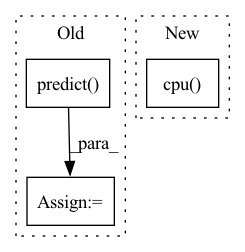

Pattern ID :41947
Before Change
if fp16:
with autocast():
predictions: np.ndarray = model.predict( x) .cpu()
else:
predictions: np.ndarray = model.predict(x).cpu()
After Change
loss += criterion(predictions, y)
total_examples += len(y)
return (loss / total_examples).cpu() .item()
def print_message(message: str) -> None:
In pattern: SUPERPATTERN
Frequency: 3
Non-data size: 3
Instances Fragment ID: 117546753
Project Name: ikergarcia1996/self-driving-car-in-video-games
Commit Name: f5597705502e3ae2387027eecd3c1f7b2d3c7619
Time: 2021-01-30
Author: igarciaf896@gmail.com
File Name: utils.py
M Class Name: AnonimousClass
N Class Name: AnonimousClass
M Method Name: evaluate(4)
N Method Name: evaluate(4)
M Parent Class:
N Parent Class:
M File Name: utils.py
N File Name: utils.py
M Start Line: 69
M End Line: 99
N Start Line: 30
N End Line: 57
Before Change
with torch.no_grad():
x_tensor = torch.from_numpy(image).to(DEVICE).unsqueeze(0)
print(x_tensor.shape)
pr_mask = seg_model.predict( x_tensor)
pr_mask = pr_mask.argmax(dim=1).squeeze().cpu().numpy().astype("uint8")
save_vis(
out_fp="./vis{}.png".format(str(i)),After Change
n = np.random.choice(len(dataset))
image, gt_mask = dataset[n]
image_vis = image.permute((1, 2, 0)).cpu() .numpy().astype("uint8")
gt_mask_vis = gt_mask.squeeze().cpu().numpy().astype("uint8")
if seg_model is not None: Fragment ID: 117546755
Project Name: ais-bonn/vp-suite
Commit Name: e8b74aea072bfc2c6f36278093202f5b017967f0
Time: 2021-07-15
Author: boltres@ais.uni-bonn.de
File Name: visualize.py
M Class Name: AnonimousClass
N Class Name: AnonimousClass
M Method Name: visualize(3)
N Method Name: visualize(2)
M Parent Class:
N Parent Class:
M File Name: visualize.py
N File Name: visualize.py
M Start Line: 16
M End Line: 25
N Start Line: 10
N End Line: 23
Before Change
input_ids, attention_mask, segment_ids, valid_masks, label_ids, label_masks = batch
prediction, valid_len = self.predict( batch)
metrics.evaluate(prediction, label_ids, valid_len)
After Change
pred_result = torch.cat(pred_result)
p, r, f1, _ = precision_recall_fscore_support(label_result.cpu().numpy(),
pred_result.cpu() .numpy(),
average="macro")
table = pt.PrettyTable(["{}".format("Evaluation"), "F1", "Precision", "Recall"]) Fragment ID: 117546760
Project Name: jinzhuoran/cogie
Commit Name: a3df407e630e8b4bbcc3388fd34d0361d70fbdc9
Time: 2022-04-07
Author: 1208314139@qq.com
File Name: cogie/models/ner/w2ner.py
M Class Name: W2NER
N Class Name: W2NER
M Method Name: evaluate(2)
N Method Name: evaluate(3)
M Parent Class: nn.Module
N Parent Class: nn.Module
M File Name: cogie/models/ner/w2ner.py
N File Name: cogie/models/ner/w2ner.py
M Start Line: 271
M End Line: 286
N Start Line: 272
N End Line: 297